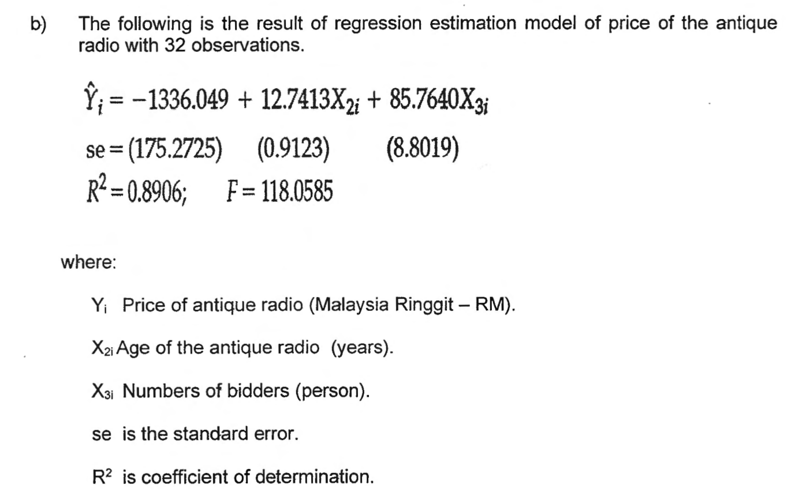
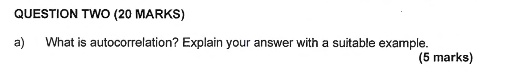
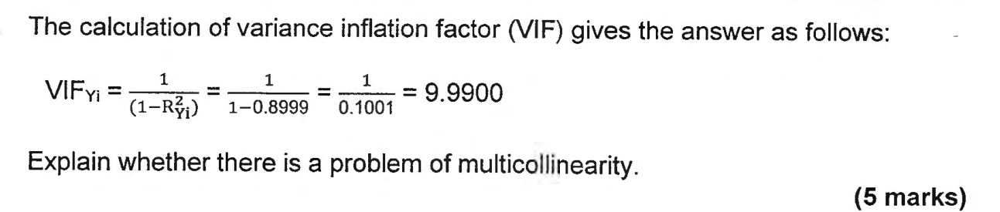
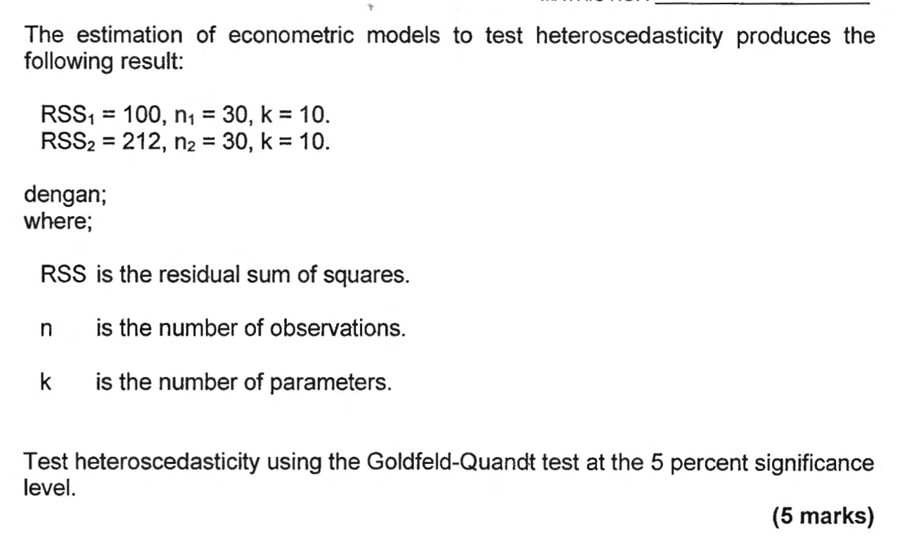

ChatGPT 30 Novmodel GPT-3.5
1 jutapengguna dalam 5 hari
Guna AI sebagai jurulatih, bukan jalan pintas.
Baca bab, tulis nota sendiri, buat latihan di kertas.
Kamera tutup, kuliah dirakam. "Nanti saya tengok balik."
Buku teks dan nota makin jarang dibuka. Slaid jadi "nota".
Salin soalan, letak ke AI, salin jawapan. Tak baca pun.
Alat makin canggih. Kerja otak makin sikit.
Ilustrasi, bukan dataBelum dilancar
Belum dilancar
Pesaing lain: Microsoft Copilot · Meta Llama · xAI Grok · DeepSeek (China)
Tanya, ia jawab dengan tulisan.
ChatGPTFaham gambar, dan lukis gambar baharu.
GPT-4 · DALL·E 3Berbual seperti di telefon, masa nyata.
GPT-4o · Gemini LiveFikir langkah demi langkah sebelum menjawab.
o1 · Gemini Deep ThinkEjen AI guna komputer, tulis kod dan siapkan tugas.
Claude Code · ChatGPT agentSatu ayat jadi video lengkap dengan bunyi.
Veo 3 · Sora 2Setiap tahun AI makin hebat. Soalannya: anda pula?
Tekan →Dari portal atau PDF pensyarah.
"Buat assignment saya."
Tak baca pun.
Tukar nama, kemas format.
Rasa produktif.
Carry mark tinggi. Jumlah lepas 50%. Tapi keputusan: GAGAL.
Kalau tak lulus final, anda gagal kursus itu, walaupun jumlah markah lebih 50%.
Gagal final = gagal kursus.
Kerja kursus anda 50/60. Final paling kurang berapa untuk lulus?
Bezanya bukan pada alat. Bezanya pada cara anda menggunakannya.
Tekan →Jawapan AI yang lancar membuat otak rasa sudah faham, walhal ia tidak bekerja.
Kesukaran yang "baik" menguatkan ingatan jangka panjang. Bjork & Bjork, 2011
Mengingat semula lebih berkesan daripada membaca semula. Roediger & Karpicke, 2006
"Jawapan AI sentiasa tepat."
↻ Reaksi duluSALAH
AI menjana teks ikut corak. Ia boleh "berhalusinasi", termasuk mereka rujukan dan pengiraan.
"Guna AI dalam assignment sama dengan menipu."
↻ Reaksi duluBERGANTUNG
Ikut polisi kursus dan pensyarah. Ada yang benarkan untuk sumbang saran, ada yang larang sepenuhnya.
"AI boleh bantu saya belajar lebih cepat."
↻ Reaksi duluBETUL
Dengan satu syarat: anda yang masih buat kerja berfikir. Itulah kerangka BIJAK.



Soalan "What is…? Explain with example" menguji faham, bukan hafal. Minta AI terangkan, kemudian terangkan semula dengan ayat sendiri.
Terangkan [autokorelasi] seperti saya pelajar tahun satu, guna contoh data jualan bulanan. Kemudian tanya saya 3 soalan untuk semak kefahaman. Jangan beri jawapan sehingga saya cuba dahulu.
Terangkan topik paling susah semester ini dalam 2 ayat. Taip di Chat.
Kertas lepas ialah bahan uji diri terbaik. Minta AI hasilkan versi baharu supaya anda berlatih, bukan menghafal.
Ini soalan peperiksaan lepas tentang multikolineariti: [letak Soalan 4]. Bina 5 soalan baharu yang serupa dengan nombor berbeza. Tanya satu demi satu, tunggu jawapan saya, kemudian beri maklum balas.
Ambil satu kertas lepas. Minta AI bina versi baharu, jawab tanpa nota.
Sedikit tetapi kerap mengalahkan "study last minute". Beri AI senarai topik sebenar kertas anda.
Peperiksaan Ekonometrik Asas saya ada 5 topik: regresi, autokorelasi, heteroskedastisiti, multikolineariti dan pemboleh ubah dummy. Ia bermula [tarikh]. Saya boleh belajar 2 jam sehari. Bina jadual ulang kaji berjarak. Topik paling lemah: [autokorelasi].
150 minit ÷ 20 bahagian ≈ 7.5 minit bagi setiap 5 markah. Latih dengan jam.
Jawab dahulu dengan tangan sendiri. Kemudian minta AI menilai seperti pemeriksa, tanpa menulis semula jawapan anda.
Anda pemeriksa kertas BEEQK2023. Ini jawapan saya untuk Soalan 4(c), VIF = 9.99: [letak jawapan]. Beri markah daripada 5 dan senaraikan apa yang tertinggal. Jangan tulis semula jawapan saya.
Semak setiap angka dengan jadual lampiran. Slaid seterusnya: satu contoh sebenar.

df = n − k = 30 − 10 = 20
Jadual 2, lampiran kertas
F kira tidak melebihi F kritikal. Jawapan "yakin" yang tidak menyemak jadual mudah tersilap di sini. Semak setiap langkah dengan jadual lampiran dan nota kuliah.
Ikut garis panduan AI setiap kursus. Jika dibenarkan, isytiharkan cara anda menggunakannya. Hasil akhir mesti hasil fikiran anda.
Saya menggunakan [nama alat AI] untuk menjana soalan latihan dan menyemak tatabahasa. Semua idea, analisis dan hujah dalam tugasan ini adalah hasil kerja saya sendiri.
Letak soalan exam yang belum dikeluarkan atau data peribadi. Hantar rujukan yang belum dibaca.
Siapa AI?
Apa yang perlu dibuat?
Siapa anda, apa tahap anda?
Bagaimana rupa jawapan?
Biar AI tanya anda dahulu
terangkan heteroskedastisiti
SelepasPrompt yang mantap akan terbina di sini…Anda tutor ekonometrik yang sabar. Terangkan heteroskedastisiti dan beri 3 soalan latihan seperti Soalan 3. Saya pelajar tahun 2 yang lemah dalam statistik. Guna jadual ringkas dan contoh langkah demi langkah. Tanya saya soalan dahulu jika maklumat tidak cukup.
jawab soalan 2(a)
Tulis semula guna Peranan + Tugas + Konteks + Format supaya AI membantu anda faham autokorelasi, bukan menjawab untuk anda.
Anda tutor ekonometrik. Saya pelajar tahun 2 yang keliru tentang autokorelasi. Terangkan dengan contoh data siri masa, lukis gambaran ringkas, kemudian uji saya dengan 3 soalan. Jangan tulis jawapan peperiksaan untuk saya.
Tak perlu sempurna. Contoh: jawab soalan 2(a)
Tahap anda? Bahagian mana keliru? Mahu nota, contoh atau kuiz?
Guna semula untuk topik lain. Tukar sahaja perkataan dalam [kurungan].
Saya mahu belajar [autokorelasi] untuk peperiksaan. Ini prompt saya: [jawab soalan 2(a)]. Jangan jawab dahulu. Tanya saya 3 soalan untuk mengisi maklumat yang tertinggal. Kemudian tulis semula prompt itu guna Peranan, Tugas, Konteks dan Format, dan terangkan apa yang anda ubah.
Salin prompt ini, tukar perkataan dalam [kurungan] kepada topik anda, dan uji di AI pilihan anda.
Settings → Account · atau Projects
Personalization → Custom instructions
Customize → + Add · atau Gems
Semak tetapan data. Jangan simpan no. matrik, IC atau data peribadi.
Saya pelajar sarjana muda tahun [2] di [UUM], program [Ekonomi]. Terangkan dalam Bahasa Melayu, tetapi kekalkan istilah teknikal dalam bahasa Inggeris. Jadi jurulatih, bukan penulis: jangan siapkan tugasan atau jawapan peperiksaan saya, bimbing saya langkah demi langkah. Guna contoh Malaysia (ringgit, data DOSM, BNM). Jika tidak pasti, katakan; jangan reka rujukan. Akhiri setiap jawapan dengan 2 soalan semak faham.
Selepas tetapkan, tanya AI: "Apa yang anda tahu tentang cara saya mahu belajar?"
You are not my assistant. You are my advisor who happens to be smarter than me. Follow these rules in every reply: Never start with agreement. Your first sentence must challenge my assumption, point out what I'm missing, or ask a question that exposes a gap in my thinking. Rate your confidence. Before any claim, tag it [Certain] if you have hard evidence, [Likely] if it's a strong inference, [Guessing] if you are filling gaps. If most of your reply is guessing, say so first. Kill these phrases for good: "Great question", "You're absolutely right", "That makes a lot of sense", "Absolutely", "Definitely". If you catch yourself typing one, delete and rewrite. Disagree with structure. When I'm wrong, say: "I disagree because [reason]. Here's what I'd do instead [alternative]. The risk in your approach is [specific downside]." Give me the uncomfortable answer first. If there's a truth I probably don't want to hear, lead with it. First line, not buried in paragraph three. No warm up paragraphs. Skip "There are several ways to look at this". Start with the most useful thing you can say. If I push back, don't fold. Hold your position unless I give you genuinely new information. "But I really think" is not new information. Be my debate partner. Be critical with me, find weaknesses, blind spots and flawed logic. Stop agreeing just to be nice. Seek the truth and the best outcome, not just what I want to hear. Be direct and tough. If you need to contradict me, contradict me. If you’re not sure, say you are not sure. Check the internet before stating facts.
Tanya: "Heteroskedastisiti bermaksud ralat saling berkorelasi, betul?" Jika AI terus setuju, templat belum berfungsi.
Saya pelajar sarjana muda tahun 2 di UUM, program Ekonomi. Terangkan dalam Bahasa Melayu, tetapi kekalkan istilah teknikal dalam bahasa Inggeris. Jadi jurulatih, bukan penulis…
You are not my assistant. You are my advisor who happens to be smarter than me. Follow these rules in every reply…
AndaApa yang anda tahu tentang cara saya mahu belajar?
AIAnda pelajar tahun 2 Ekonomi di UUM. Saya akan bimbing anda langkah demi langkah, bukan siapkan tugasan anda.
Saya pelajar sarjana muda tahun 2 di UUM, program Ekonomi. Terangkan dalam Bahasa Melayu, tetapi kekalkan istilah teknikal dalam bahasa Inggeris. Jadi jurulatih, bukan penulis…
You are not my assistant. You are my advisor who happens to be smarter than me. Follow these rules in every reply…
AndaApa yang anda tahu tentang cara saya mahu belajar?
AIAnda pelajar tahun 2 Ekonomi di UUM. Saya akan bimbing anda langkah demi langkah, bukan siapkan tugasan anda.
Saya pelajar sarjana muda tahun 2 di UUM, program Ekonomi. Terangkan dalam Bahasa Melayu, tetapi kekalkan istilah teknikal dalam bahasa Inggeris…
⋮You are not my assistant. You are my advisor who happens to be smarter than me. Follow these rules in every reply…
⋮AndaApa yang anda tahu tentang cara saya mahu belajar?
AIAnda pelajar tahun 2 Ekonomi di UUM. Saya akan bimbing anda langkah demi langkah, bukan siapkan tugasan anda.
Alat: ChatGPT, Gemini, Claude, Copilot, NotebookLM. Guna yang dibenarkan kursus anda.
Fakta, rujukan dan pengiraan boleh salah. Semak dengan sumber asal dan jadual.
Jangan letak data peribadi atau soalan exam yang belum dikeluarkan.
Tak boleh mula tanpa AI? Itu tanda otot otak makin lemah.
Jawapan AI mungkin tidak sesuai dengan konteks Malaysia.
Setiap kursus ada peraturan berbeza. Tak pasti? Tanya pensyarah.
Siap dalam 10 minit. Terasa produktif.
Tiada satu artikel asal pun dibaca.
Kaedah, data dan had kajian tertinggal.
Idea anda sama dengan semua orang yang guna AI.
Penyelia tanya "Kenapa kaedah ini?" Anda diam.
Minta AI terangkan istilah dan latar topik.
Abstrak, kaedah, dapatan, had. Isi jadual matriks literatur anda.
Tulis ringkasan anda dahulu, kemudian minta AI menguji anda.
Setiap petikan dan angka mesti ada dalam artikel. Tiada? Jangan guna.
Saya sudah membaca artikel [tajuk artikel]. Ini ringkasan saya: [letak ringkasan]. Jangan ringkaskan artikel itu untuk saya. Tanya saya 5 soalan tentang soalan kajian, kaedah, data, dapatan dan had kajian. Selepas saya jawab, beritahu apa yang saya terlepas supaya saya semak semula dalam artikel asal.
Baca satu artikel FYP sendiri dan isi satu baris matriks: pengarang, tahun, kaedah, data, dapatan, had.
Jawab ketiga-tiga soalan dengan jujur.
Minta AI beri gambaran awal topik dan 3 soalan untuk difikirkan.
Ringkas nota sendiri. Minta AI kenal pasti apa yang tertinggal.
Kuiz kendiri dari nota minggu ini. Ulang topik yang lemah.
Jawab kertas lepas ikut masa. Minta AI semak langkah anda.
Kecil tetapi konsisten: setiap minggu, bukan semalam sebelum exam.
K sentiasa"Mulai esok, saya akan guna AI untuk dan berhenti guna AI untuk ."
Prof. Madya Dr. Mukhriz Izraf bin Azman Aziz · mukhriz@uum.edu.my
Webex: klik dalam senarai chat, Ctrl+A, Ctrl+C. Google Meet: seret tetikus dari mesej pertama hingga terakhir, Ctrl+C. Kemudian letak di sini, atau terus Ctrl+V di mana-mana slaid. Mesej yang sudah dibaca sebelum ini tidak dikira dua kali.